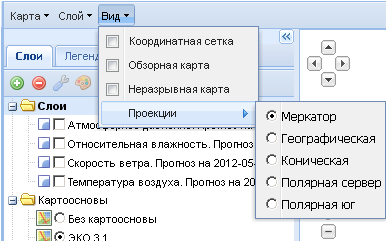
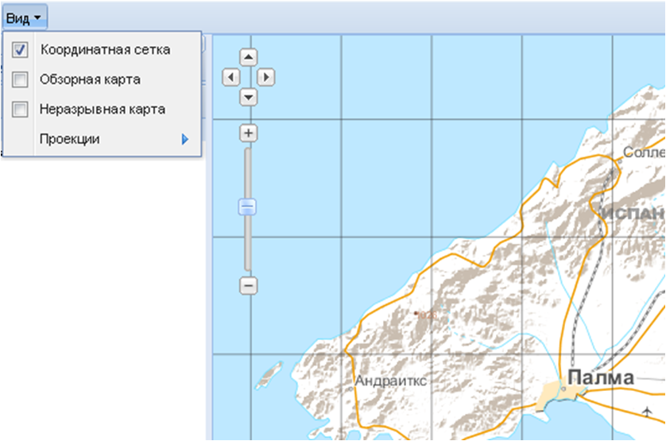
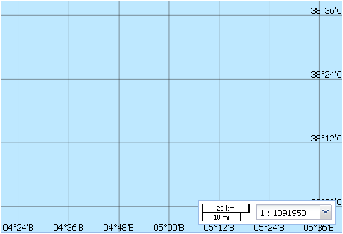
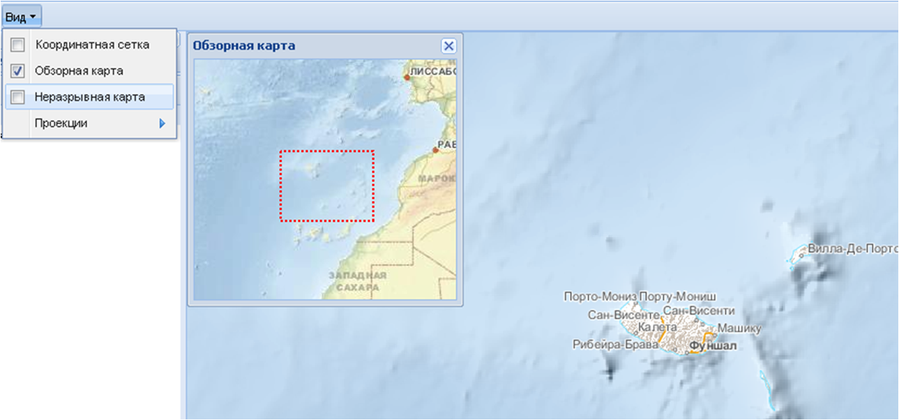
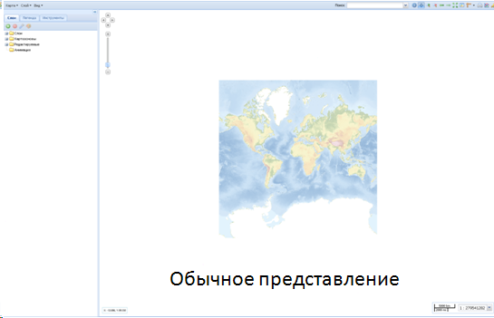
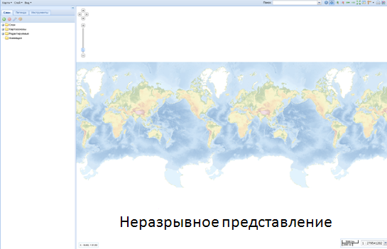
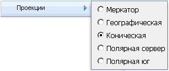

Вид
Опции меню Вид позволяют:
- регулировать характер отображения в рабочем окне карты,
- управлять видами проекций загружаемых картографических основ.

При выборе опции Координатная сетка в рабочем окне карты появятся параллели и меридианы. Частота нанесения линий координатной сетки зависит от выбранного масштаба картографической основы: с укрупнением масштаба она увеличивается.

Значения широт и долгот координатной сетки подписаны по нижнему и правому краям рабочего окна карты.
Опция Обзорная карта служит для вывода в рабочем окне маленького окошка с изображением карты более мелкого масштаба. На ней красным пунктирным прямоугольником отмечена видимая область карты рабочего окна, позволяющая пользователю определять его местоположение. Если пользователь работает с фрагментом карты крупного масштаба, то обзорную карту можно в том числе использовать и для быстрого перемещения по картографической основе. Для этого необходимо навести курсор на красный прямоугольник (курсор поменяет вид на  ), нажать на левую кнопку мыши и сдвинуть прямоугольник (за один раз или в несколько приемов) в необходимом направлении.
), нажать на левую кнопку мыши и сдвинуть прямоугольник (за один раз или в несколько приемов) в необходимом направлении.
Окошко обзорной карты можно двигать по рабочему окну и изменять его размеры.

Опция Неразрывная карта дает возможность изменить стандартное представление картографической основы, когда карта «разорвана» (обычно по Тихому океану). Использование данной опции отображает картографическую основу в непрерывном виде.

При наведении курсора на опцию Проекции в ниспадающем списке открываются виды проекций. Отмечая галочкой необходимую проекцию, можно представить проект в наиболее подходящем для пользователя виде.

По умолчанию картографическая основа загружается в проекции Меркатора.